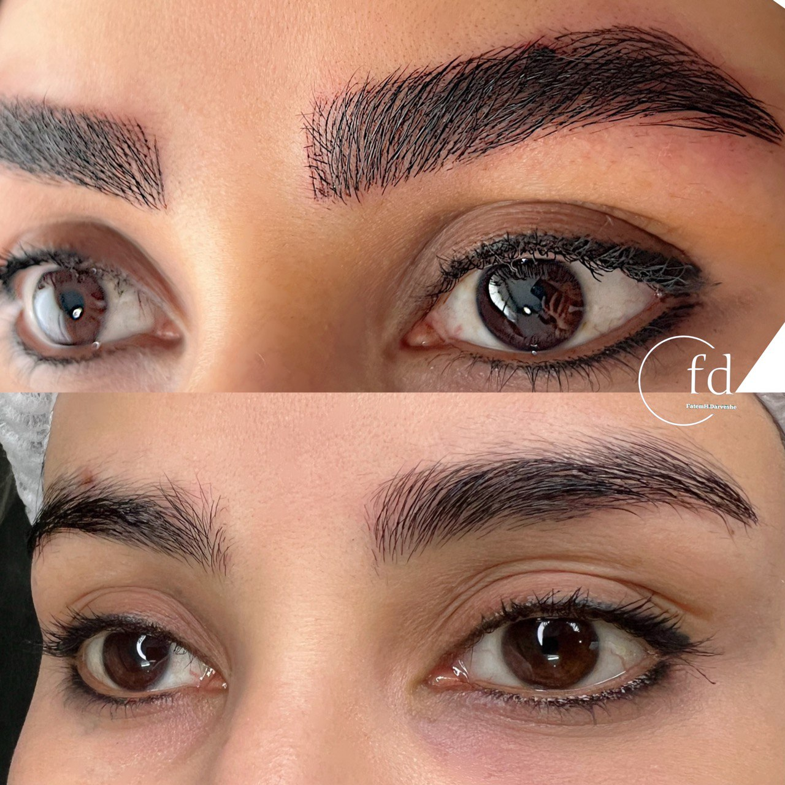

عوارض میکروبلیدینگ و راههای پیشگیری از آن (نگاهی واقعبینانه)
نوشته شده در تاریخ ۱۰ مرداد ۱۴۰۴ - توسط: م. اشرفی
میکروبلیدینگ یک روش فوقالعاده برای رسیدن به ابروهایی زیباست، اما مانند هر procédure زیبایی دیگری، اگر توسط فرد غیرمتخصص یا در محیطی غیربهداشتی انجام شود، میتواند با عوارضی همراه باشد. هدف این مقاله، ترساندن شما نیست؛ بلکه آگاهسازی شماست تا با شناخت **عوارض احتمالی میکروبلیدینگ** و **راههای پیشگیری** از آنها، یک تجربه کاملاً ایمن و رضایتبخش داشته باشید.
عوارض طبیعی و موقتی (جای نگرانی نیست!)
بعد از انجام میکروبلیدینگ، بروز برخی علائم کاملاً طبیعی و بخشی از فرآیند بهبودی است:
- قرمزی و ورم خفیف: پوست شما به خراشهای سطحی واکنش نشان داده است. این حالت معمولاً طی چند ساعت تا حداکثر ۲۴ ساعت از بین میرود.
- تیرهتر بودن رنگ ابرو: در چند روز اول، رنگ ابروها بسیار تیرهتر از نتیجه نهایی به نظر میرسد. این کاملاً طبیعی است و با پوستهریزی، رنگ واقعی و ملایمتر مشخص میشود.
- خارش و پوستهریزی: این نشاندهنده شروع فرآیند ترمیم پوست است. **هرگز** پوستهها را نکنید و ناحیه را نخارانید.
عوارض جدیتر (چگونه پیشگیری کنیم؟)
عوارض جدیتر تقریباً همیشه نتیجه دو عامل هستند: **عدم مهارت پیگمنتر** یا **عدم رعایت بهداشت**. خوشبختانه با یک انتخاب هوشمندانه، میتوان از تمام این موارد پیشگیری کرد.
۱. عفونت
این جدیترین عارضه ممکن است و زمانی رخ میدهد که از وسایل غیراستریل استفاده شود یا مراقبتهای بعد به درستی انجام نشود. **راه پیشگیری:** به مرکزی مراجعه کنید که از پکهای یکبار مصرف (سوزن، کارتریج و...) استفاده کرده و آنها را در مقابل چشمان شما باز میکند. همچنین، دستورالعملهای مراقبتی بعد از کار را مو به مو اجرا کنید.
۲. واکنشهای آلرژیک
بسیار نادر است، اما ممکن است برخی افراد به رنگدانهها حساسیت نشان دهند. **راه پیشگیری:** یک پیگمنتر حرفهای قبل از شروع کار، تست حساسیت (Patch Test) را روی بخش کوچکی از پوست شما انجام میدهد تا از عدم وجود آلرژی اطمینان حاصل کند.
۳. نتیجه غیرطبیعی و پشیمانی
این یک عارضه روحی است، نه جسمی! نتیجهای که نامتقارن، بیش از حد تیره یا با فرم نامناسب باشد، میتواند بسیار ناامیدکننده باشد. **راه پیشگیری:** این مورد مستقیماً به هنر و تجربه پیگمنتر بستگی دارد. حتماً نمونه کارهای واقعی او را ببینید و در جلسه مشاوره، طراحی اولیه را روی صورت خود امتحان و تایید کنید.
یک انتخاب آگاهانه، بهترین راه پیشگیری است. با انتخاب یک مرکز معتبر و متخصص مانند مرکز زیبایی فاطمه درویشی که بهداشت و کیفیت را در اولویت قرار میدهد، میتوانید با خیال راحت از زیبایی ابروهای جدید خود لذت ببرید.